电子DIY
闹钟-人类史上最自虐的发明、让嗜睡男们又爱又恨的家伙，像黑白无常一样把我们从温柔乡里无情地带走，多少美梦在它那催命符般的叫声中灰飞烟灭。可是却又多少次成功地把我们叫醒，避免了因为迟到误点引发的各种悲剧。为上班族挽回了月底那几张百元大钞。
但是，就算是世界上最厉害的闹钟，也总有失灵的时候。因为嗜睡男们的睡功也不是盖的。多年的抗战早已练就了一身本事，谁也无法阻挡他们追求艺术的脚步。
为此，各种稀奇古怪的闹钟陆续诞生，其职责就是让嗜睡男们抓狂苏醒。相信很多嗜睡男都有过类似的经历，读书或工作的时候，每天早上起床的第一件事情就是让该死的闹钟闭嘴，然后匆匆刷牙洗漱出门。但是又不得不周而复始。在每晚睡觉前再次调整好闹钟，以防第二天迟到误点悲剧面对铁血班主任或恐怖BOSS。
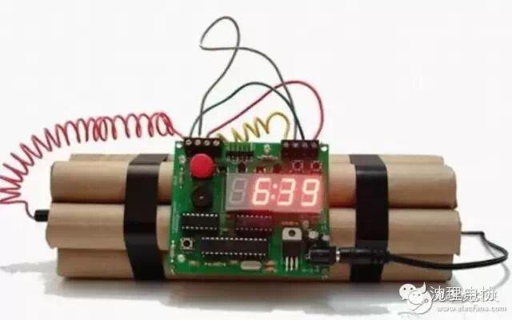
想必读者一定都看过关于拆炸弹的影集吧，如果当你早上起床的时候看见身边有一个类似的物体， 会有什么感觉？好了， 你也会有机会体验这样的感觉， 而代价并不需要付出你的生命，而是你的睡眠。
材料准备：直径2厘米的热水管一条，价格十几块，五金店有售。 （用于 DIY 模型雷管）
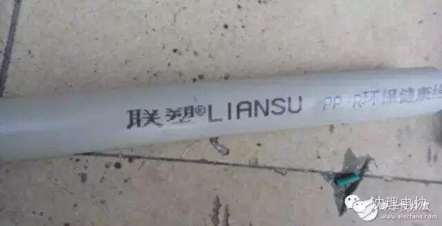
裁切成七条500px 留待备用。
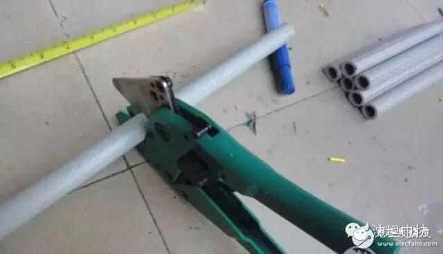
自己绘制了 TNT 炸弹的外包装图纸。 A4打印纸TNT 雷管图纸三张备用。最好是高光相片纸，这样子出来的效果更 YY，比较逼真。
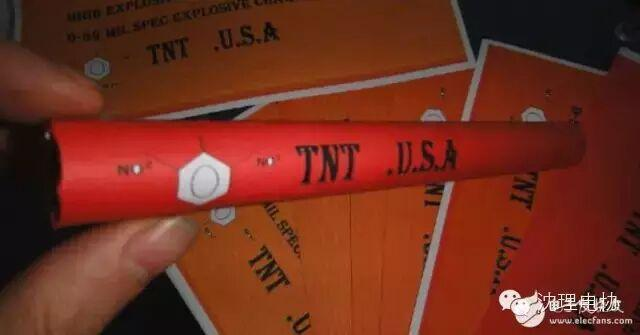
每张 A4图纸裁切成四分同等大小，背部用双面胶粘贴道具雷管（热水管）。
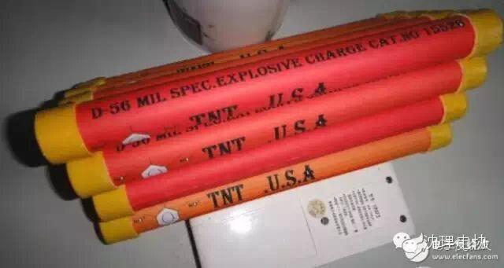
好了，先晾一边，接着就是 DIY TNT 雷管时钟电路部分了。有电子基础的童鞋们可以考虑自己买材料自己 DIY，下面有所需的配件和电路图，没有电子基础的童鞋们也可以直接上淘宝买成品模块。
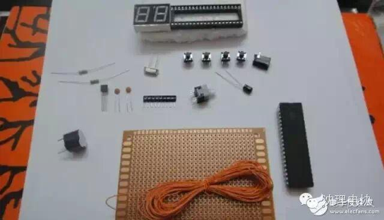
一个是 99 秒倒计时电路装置，{99 秒后倒计时报警。}

99 秒后倒计时报警连线图
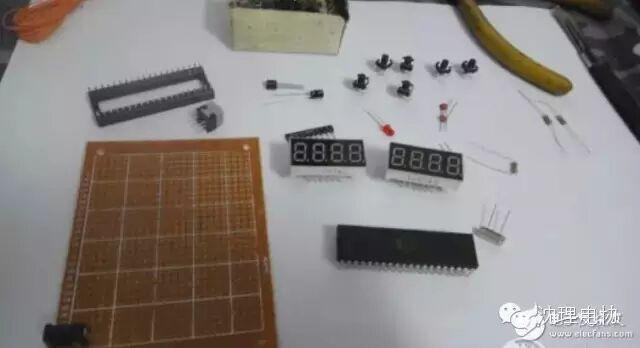
99 秒后倒计时报警电路图
另外一个是简易电子时钟。支持整点报时，可设置闹钟。
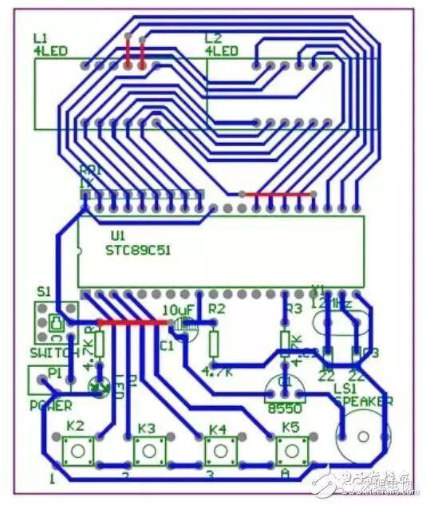
简易电子时钟连线图
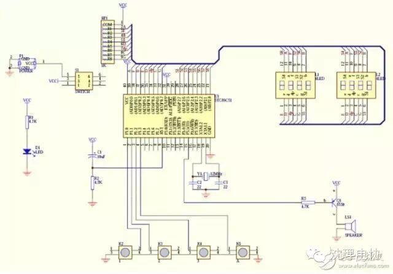
简易电子时钟电路图
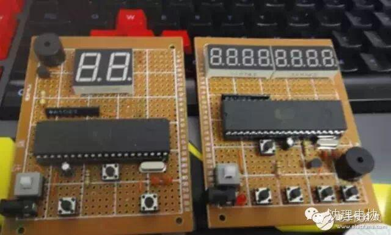
花了数个小时飞线焊接后的面板展示
接着把 DIY 的 TNT 雷管模型下四上三堆叠在一起， 用黑色电工胶布捆好。 把电路板用扎带扎到模型雷管上。
嘿嘿，一颗 TNT 定时炸弹就制作成功了，为了追求逼真的效果， 剪了一段网线， 抽出里面的小铜芯。 用螺丝刀一圈一圈绕弯。
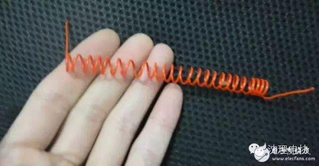
接着把几段绕弯的小铜线固定在电路板和雷管模型之间。
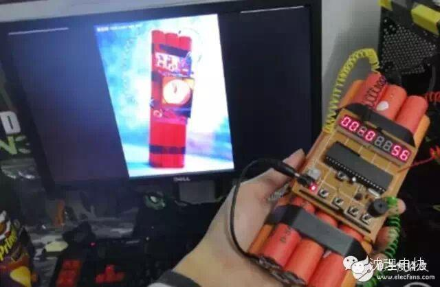
这样就大功告成了。一颗逼真的 TNT 雷管炸弹模型闹钟就出炉了。
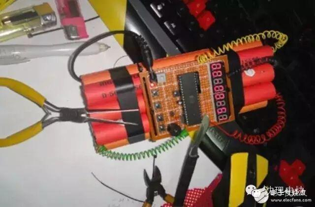
供电问题：制作好的电路板可以通过 USB 供电，也可以通过三颗 1.5V 的五号电池供电。电池刚好可以容纳在直径 2 厘米的热水管内部。
通电测试无误后把模型雷管捆绑起来，用魔术扎带把电路板扎在雷管上。 捡一段网线掏出几条小铜线绕弯装饰后，一颗恐怖的 TNT 时钟炸弹完工。
关注沈理电协（微信：sylgdzxh）
每一次转发和分享都是对我们的肯定。